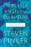

پذيرش > تریبون > مقالات > سیر تکامل اجتماعی به سمت صلح پایدار پیش می رود / ژیلا افتخاری


 سیر تکامل اجتماعی به سمت صلح پایدار پیش می رود / ژیلا افتخاری سیر تکامل اجتماعی به سمت صلح پایدار پیش می رود / ژیلا افتخاری
27 اسفند 1390 - - نسخه قابل چاپ
تغییر برای برابری: آیا این امر برای شما باور کردنی است که ما در یکی از صلح آمیزترین دوران تاریخ بشر زندگی می کنیم؟ در دورانی که روزانه شاهد درج اخبار جنگ، تهدید به جنگ، خشونت و تجاوز درمطبوعات اقصی نقاط جهان هستیم، هضم چنین خبر خوشحال کننده ای مشکل بنظر می آید. آما این نظریه را استیون پینکر Steven Pinker پرفسور روانشناسی دانشگاه هاروراد و یکی از بزرگترین متفکران این کشور در کتابی 800 صفحه ای تحت عنوان ”The better angels of our nature” با آمار و ارقام عریض و طویلی مطرح می کند. پینکر زبان شناس، محقق روانشناسی تکاملی و خودآگاهی است و پنج کتاب را در این زمینه به تحریر در آورده است. وی در کتاب اخیرش به عرصه های فلسفه، اقتصاد، تاریخ، روانشناسی، جامعه شناسی، جرم شناسی و تاریخ شکنجه سر زده و با استفاده از آمار و ارقام ثابت میکند که جوامع مدرن در یک فرایند تاریخی خشن تر نشده اند و بالعکس خشونت به شکل پایداری کاهش یافته است.
اگر بر اساس اعداد و ارقام محاسبه کنیم قرن 19 یکی از خونین ترین قرنهای تاریخ بشر(به دلیل تعداد کشته شدگان) بوده است. اما با توجه به رشد جمعیت در مقایسه های تحقیقات تاریخی می بایست ازمحاسبات درصدی استفاده کرد. در قیام An Lushan که در قرن هفتم در چین به وقوع پیوست حدود 36 میلیون نفر کشته شدند که در مقیاس جمعیتی قرن نوزده معادل 429 کشته محسوب می شود. دردوران حکومت مغولها در قرن دوازده 40 میلیون نفر کشته شدند که در مقیاس جمعیتی قرن نوزده معادل 278 میلیون کشته محسوب می شوند. بنابرین جنگهای جهانی اول و دوم تلفات به مراتب کمتری از جنگهای پیشین داشته اند و پس از آن نیز ما در یک "صلح پایدار" بسر برده ایم!
پینکر معتقد است که بالا رفتن سطح آگاهی مردم، جنبشهای اعتراضی اجتماعی برای کسب حقوق برابر در سوق دادن جوامع به سمت صلح پایدار موثر بوده است. او می نویسد از اوایل دهه هفتاد به این سو، زمانیکه مبارزه با خشونت به یک موضوع فمینیستی تبدیل شد، جنبشهای زنان شاهد کاهش 80 درصدی تجاوزات جنسی هستند. خشونت خانگی به میزان دو سوم کاهش پیدا کرده و خشونت مرد بر علیه همسر به میزان 50% پایین رفته است. شدیدترن نوع خشونت در خانوداه، یعنی قتل همسر، هم مرد وهم زن نزول پیدا کرده. در واقع قتل همسران مرد به شکل دراماتیکی کاهش یافته است. فمینیسم به نفع مردان عمل کرده چرا که خطر کشته شدن آنان در روابط زوجها را کاهش داده است. مدافعان حقوق کودکان شاهد کاهش تنیه بدنی دانش آموزان آمریکایی در ایالتهای مختلف هستند. در بخشهای بزرگی از اروپا تنبیه دانش آموزان بطور کلی ممنوع شده است. واقعییت این است که تنبیه بدنی توسط والدین نیز در بسیاری از کشورهای اروپایی ممنوع است. بنا به آمار ثبت شده از ابتدای قرن 19 خشونت علیه کودکان کاهش یافته است. خشونت در مدارس مانند کتک کاری و زورگویی تقلیل پیدا کرده است. مدافعان حقوق همجنسگرایان شاهد افزایش کشورهایی هستند که همجنسگرایی را جرم قلمداد نمی کنند. مواضع ضد همجنسگرایی مانند ضد اخلاقی دانستن آن، قائل نشدن حقوق برابر و غیر قانونی کردن آن، رو به کاهش است.
مدافعان حقوق حیوانات شاهد کاهش شکار، افزایش گیاهخواری و کاهش فیلمهای حاوی آزار و اذیت حیوانات هستند.
حال این تغییر مثبت صلح جویانه چگونه بوجود آمده است؟ شاید طبیعت انسان تغییر پیدا کرده و گرایشهای خشن خود را از دست داده است. از نظر پینکر این احتمال ضعیف است چرا که انسان با اشتیاق فراوان بخش عمده ای از درآمد خویش را صرف فیلمهای میل گبسن و بازیهای تلویزیونی خشن می کند. از تعدادی از دانشجویان آمریکایی که ظاهرا کمترین تمایل به خشونت را دارند سوال شد "آیا هرگز رویای کشتن کسی را که دوست ندارید، در سر پرورانده اند؟" 15 درصد از زنان و دو سوم مردانی که مورد سوال قرار گرفتند پاسخ دادند بله آنان اغلب در رویای خود کسی را که دوست ندارند به قتل رسانده اند. بیش ار 60 درصد از زنان و سه چهارم مردان پاسخ دادند که آنها بعضی وقتها رویای قتل کسی را که دوست ندارند در سر پرورانده اند و مابقی دروغ می گویند.
پینکر معتقد است که انسان محصول ژنتیک و محیط است و ترکیبی از فرشته و شیطان. اما چه چیزی باعث غلبه آن یکی بر دیگری می شود؟ چه بخشهایی از طبیعت انسان علیه خشونت سخن می گوید؟ او چهار فاکتور زیر را در این فرایند موثر می داند:
 کنترل خویش: توان سنجیدن و دیدن عواقب رفتار و متوقف کردن ایمپالس . کنترل خویش: توان سنجیدن و دیدن عواقب رفتار و متوقف کردن ایمپالس .
همدلی و همدردی: توان و قابلیت درک درد دیگران.
اخلاقیات که در بر گیرنده اقتدار و اختیار، خلوص و عدالت می باشد. اخلاقیات می تواند متناسب با چگونگی رشد و تکوین، مردم را به سمت خشونت بیشترنیز سوق دهد.
هوش و ذکاوت که به ما توان آنالیز و هدفمند بودن را می دهد.
چه پارامترهایی ما را به لحاظ تاریخی به سمت فرشته شدن سوق داده است؟
دولت و سیستم قضایی که حق خشونت مشروع و اجرای حکمهای قضایی را در انحصار خود دارد، می تواند خشونت مطلق را از طریق از بین بردن انگیزه های حملات، کاهش نیاز به تهدید و انتقام جویی و از طریق یکسو نگری های خود خواهانه، کاهش دهد. انسانها همواره نیات شر دشمنانشان را بزرگتر از آنچه که هست می پندارند ودر بی گناهی خویش مبالغه می کنند.
افزایش تجارت بین کشورها. پیشرفت تکنیک ومعادلات فرامرزی انسان را به این اندیشه واداشته که انسان زنده بهتر از مرده آن است. پینکر می نویسد." من تردید دارم که آمریکا علیه چین اعلام جنگ کند(اگر چه ما خیلی از چیزهای چینی ها را دوست نداریم) چرا که آنها چیزهای زیادی را برای ما تولید می کنند. و من در اعلام جنگ چین علیه آمریکا نیز تردید دارم چرا که آمریکا به آنها مقروض است".
روند تکاملی ما را به حس همدلی و همدردی مجهز کرده است. اما مشکل این است که ما این احساس را در دایره محدود خانواده بکار برده ایم. در طول تاریخ ما شاهد گسترش این دایره هستیم که از خانواده به قبیله، دهکده، کشور و نژادهای دیگرگسترش پیدا کرده است. از نظر پینکر ادبیات، مطبوعات، روزنامه نگاری و مسافرت انسانها در گسترش زوایه دید آنها و بالا بردن حس همدلی و همدردی موثر بوده است.
چه شواهدی دال بر این است که پارامترهای نامبرده در کاهش خشونت موثر بوده است؟
در قرن بیستم توانایی استدلال انتزاعی (در بخش انتزاعی تست هوش قابل سنجش است) سه واحد بالا رفته است. انسانهایی که هوشمندتر بوده و از سطح تحصیلات بالاتری برخوردار هستند مرتکب جرایم خشونت آمیز کمتری می شوند و گرایش کمتری به نژادپرستی، سکسیسم، خارجی ستیزی داشته و گرایش بیشتری به پذیرش دمکراسی از خود نشان می دهند.
منبع:http://edge.org/conversation/mc2011-history-violence-pinker
ارسال به
بالاترین
،
توییتر
،
فریندفید
،
فیسبوک
در همين بخش :
 دهمین دورۀ مراسم تندیس صدیقه دولت آبادی ۱۳۹۲ دهمین دورۀ مراسم تندیس صدیقه دولت آبادی ۱۳۹۲
کارت پستالهایی به بهانهی هشت مارس و به یاد همهی مبارزین راه برابری
بیانیه بیش از 350 تن از مدافعان حقوق زنان به مناسبت روز جهانی زن؛ زنان هر روز فرودستتر میشوند
لباسی که برای تن ما دوخته اند! /اعظم بهرامی
چالشها و چشمانداز فعالیت مدنی زنان
ديگر بخش ها :
طرح یک میلیون امضا
|
مقالات
|
سایت نوشته ها
|
اخبار
|
گزارش كمپين
|
گفت و گو
|
علیه سکوت
|
كوچه به كوچه
|
نامه های شما
|
گزارش ویژه
|
گفتگو با اعضا
|
ویژه سالگرد کمپین
|
تصویر برابری
|
دل آرام علی
|
تریبون
|
مقالات
|
تاریخ شفاهی
|
خارج از چارچوب
|
کتابخانه
|
درباره کمپین
|
کمپین در شهرها
|
کمپین در بند
|
صدای تغییر
|
ویژه 22 خرداد
|
لایحه حمایت از خانواده
|
گالری
|
عشا مومنی
|
امیر یعقوبعلی
|
خدیجه مقدم
|
راحله عسگری زاده و نسیم خسروی
|
پروین اردلان،جلوه جواهری، مریم حسین خواه، ناهید کشاورز
|
زینب پیغمبرزاده
|
سعیده امین، سارا ایمانیان، محبوبه حسین زاده، ناهید کشاورز و همایون نامی
|
احترام شادفر
|
نسیم سرابندی زاده،فاطمه دهدشتی
|
وبلاگ مهمان
|
پرونده خرم آباد
|
دستگیری ها
|
مریم مالک
|
پرستو اللهیاری
|
مهرنوش اعتمادی
|
سمیه رشیدی
|
Other Languages
|
همراهان
|
«فراخوان کمپین ده روز با بهاره هدایت»
| English
|